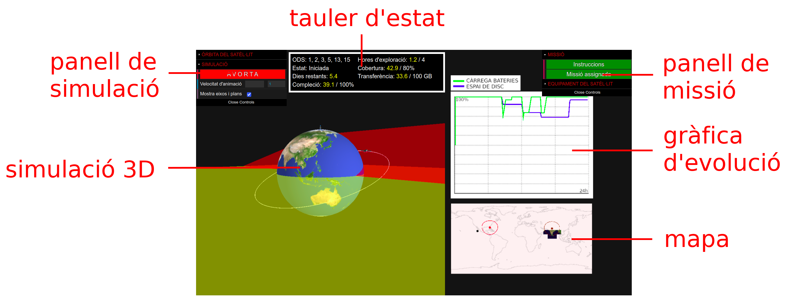

-
En aquesta activitat us incorporareu a una missió que heu de completar
amb l’ajut d’un satèl·lit artificial i una estació de seguiment virtuals.
-
Feu clic al botó Assignació de missió del panell desplegable de missió.
S’obrirà una finestra emergent amb la fitxa descriptiva de la missió assignada.
Llegiu la fitxa i navegueu seguint els enllaços per obtenir més informació sobre els fets que motiven la vostra missió.
També podeu llegir-hi els criteris de compleció de la missió
(temps d'observació sobre la zona, percentatge de cobertura i dades transferides a l'estació de seguiment).

EQUIPAMENT I ÒRBITA DEL SATÈL·LIT
-
A continuació, tanqueu la fitxa i feu clic al botó Sensors del panell de missió.
S’obrirà una finestra emergent amb la taula de sensors.
Seleccioneu els sensors que vulgueu incloure en el satèl·lit, tenint present l'objectiu de la missió, el consum energètic i la despesa en espai d’emmagatzematge de dades
(sota la taula hi ha els valors totals corresponents als valors triats).
-
Feu una estimació de l'equipament que necessiteu i escolliu el nombre d'unitats de disc (de 100 GB) i el de panells solars que vulgueu equipar.
-
En el panell de simulació, assigneu valors als elements orbitals del satèl·lit en funció dels objectius de la missió.
Per conèixer l'efecte de cada element en l'òrbita i en la trajectòria terrestre feu clic al botó Elements orbitals del panell.
El panell mostra el període del satèl·lit corresponent als valors assignats.
-
Tingueu en compte la zona d'estudi (delimitada per un traç de color marró en el mapa) i la posició de l'estació de seguiment amb la seva zona de proximitat
(delimitada per un traç de color vermell en el mapa).
-
El satèl·lit obté i enregistra dades en la zona d’estudi i les transfereix a l'estació de seguiment.
INICI I MONITORITZACIÓ DE LA MISSIÓ
-
Per iniciar la missió feu clic al botó INICIA del panell de simulació.
En el mateix panell podeu canviar la velocitat d’animació.
Plegueu després els panells per observar millor el moviment del satèl·lit i la gràfica d’evolució temporal d’energia i d’emmagatzematge.
-
Podeu canviar el punt de vista i el nivell de zoom en la simulació central amb el botó esquerre i la roda del ratolí
(la mida del satèl·lit no està a escala, es mostra més gran per facilitar l’observació).
-
El mapa mostra la posició del satèl·lit i la trajectòria terrestre.
Comproveu si el satèl·lit passa per la zona d’estudi i la cobreix totalment. En cas contrari, avorteu la missió i torneu-ho a provar.
-
La gràfica d’evolució temporal mostra com varia el percentatge de càrrega de les bateries (en color verd) i de l’espai d’emmagatzematge disponible (en color blau).
Si les bateries es descarreguen totalment els sensors no funcionen, caldria equipar sensors menys exigents o augmentar el nombre de panells solars.
-
Si el satèl·lit no passa per la zona de proximitat de l’estació de seguiment les dades no es poden transferir a l’estació i s’ocuparà tot l’emmagatzematge disponible, caldria evitar-ho.
-
En el tauler d'estat podeu comprovar el nivell de compleció de la missió.
Si aconseguiu completar-la abans que s'exhaureixi el temps assignat
es farà visible una finestra emergent amb un missatge de felicitació i haureu de fer clic al botó Tramet per registrar la nota de l'intent en el qualificador.